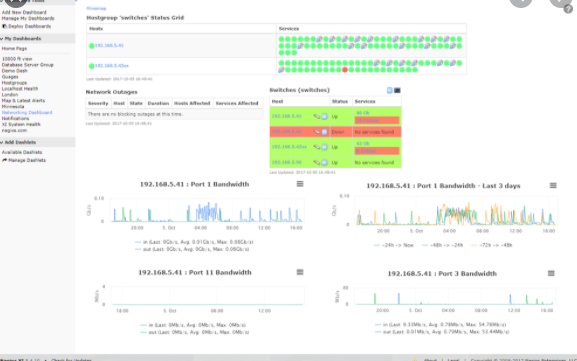
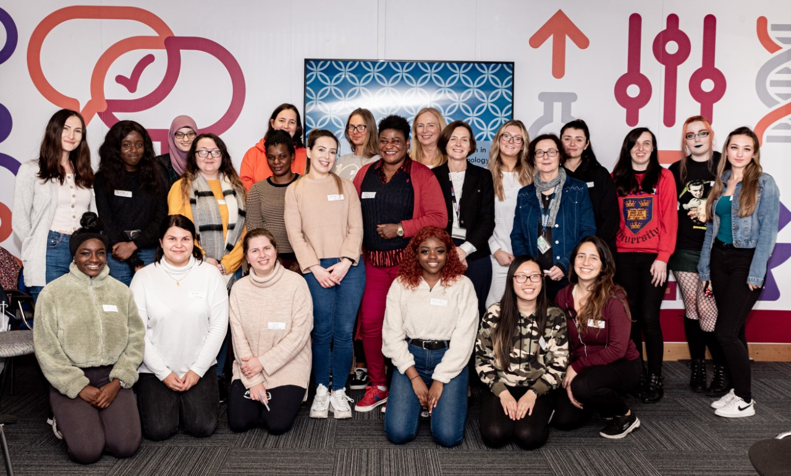

A group college project,idea initiated by me. Contribution by all group memebers involved. Users are able to login and make a book request.
The site is able to accepts monetary donaation and books donations from all over the world.
It also allowed an administrator to add and remove user accounts from the system and process transactions.
This is an individual project,it involved the creation of a MSQL database and make a connection pool available while connecting to the database on a RESTful web api.
Database ERD created,access control built in for users and admins to be able to login and out with control to resources.
Server side Rest API endpoint built to allowed the data to be assessed.
Involved in a team of three in designing and building a web-based application over three repeating iterative prototyping
cycles of design –> develop –> review. Technologies used include: Twitter Bootstrap / HTML5 / CSS / UML using IBM Rational
Rhapsody & Scala. User’s requirements captured using Survey Monkey, in order to consider preferences and features.
Initial System Design: Actively involved in designing the users interface using UML/ERD techniques.
A class was created for each user to aid the structuring of the site.
Collaboration management method using GitHub was setup to manage the project.
Developmental Stage: Played an important role in building a static version of the site using HTML, CSS, Twitter Bootstrap.
It has several pages and was converted from its static site into a Play Framework site using Visual-Code.
Testing and result of testing was documented to produce a reviewed project report.
Review Stage: Took ownership of deliverables when faced with implementing database model.
I exercised my knowledge in using CRUD functions (create, read, update, delete) in adding a dynamic content to the site.
Before presenting the final project to the panel, what went well and what wrong were reviewed, each team member’s presentation was based on their contributions.
Tools Used
JavaScript
Nodejs
Empress
Html
Css
Bootstrap
JSON
Azure SQL for storage
Github

Network Monitoring System-NagiosXI
Course : Information Technology
Year : 4
Health Checks System for Physical Servers and Cloud infrastructures
4th Year project that involves comparing diffrent network monitoring tools and choosing one-NagiosXI. Set up
scenario involves monitoring hardwares and softwares CPU, Bandwidth, both on physical server and on cloud resources
Tools Used
AWS CloudWatch, Instances
NagiosXI
VirtualBox: Virtual Machines
Windowiso
Linux:Ububtu
Node JS
Apache server
Agents/Plugins
Work Experience
Here is my Intership Experience.
Junior Network Engineer at HEAnet January 2019 - August 2019
I learnt how to configure newly purchased system Cisco, Arista
I learnt to Javascript(ES6) and started work on Production within a month.
I visited DC and learned about Data centre management
I worked with Network Monitoring system Icinga built on Nagios
I learnt how to troubleshoot DWDM and understands dathering and reporting date for all outside network
I learnt about technical support and how to apply SLA priority
I worked on and completed in-house database called circuit breaker built for tecnical engineers
I worked at the service desk and learnt how to assign ticketing
I visited clients sites in company of assigned mentor to repair, update and replace
Here are some of my personal interests and my achievements.
TU Dublin Volunteer
I am part of Student Volunteer Community at TU Dublin, Tallaght.
I am a coderDojo mentor at Technological University, Tallaght; where we teach children basic programming in Python, JavaScript and Scratch
I am a member of Women In Tech, Tallaght; where we organised outreach to schools, encourage second level students to take up IT profession

Networking
Have gained an interest in the design and development of website application as well as mobile applications from working on several projects as part of my course work, helping friend and family and for fun.
Networking
I have acquired a great knoweldge and understand ing Network monitoring system and on the importance of health cjecks in IT industries in both physical server and clouding computingie. AWS, Azure, Google Cloud platforms.
I have also gained an interest in the design and development of website application as well as mobile applications
from working on several projects as part of my course work, helping friend and family and for fun.
Repairs
Enjoys repairing gadgets in my free time, with Mobile being my favourite.
I built a new iphone 8 for my son, sourcing and research all required parts on line
Contact Me
Can be reached By: Twitter, Facebook, LinkedIn account, Phone, Email, or Use contact form below.